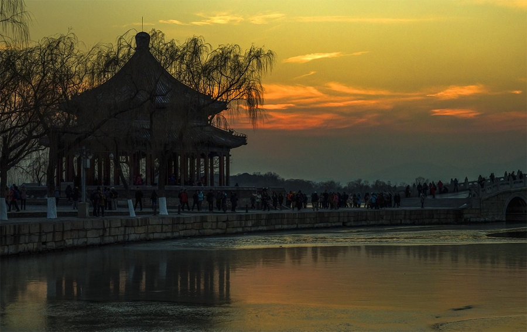

中国古典园林艺术是指以江南私家园林和北方皇家园林为代表的中国山水园林形式。其造园手法已被西方国家所推崇和摹仿，在西方国家掀起了一股“中国园林热”。
中国的造园艺术，以追求自然精神境界为最终和最高目的，从而达到“虽由人作，宛自天开”的审美旨趣。它深浸着中华文化的内蕴，是中国五千年文化史造就的艺术珍品，是一个民族内在精神品格的生动写照，是我们今天需要继承与发展的瑰丽事业。


皇家园林，在古籍里面其为"苑","囿","宫苑","园囿","御苑"，为中国园林的三种基本类型之一。

中国古代园林，除皇家园林外，还有一类属于王公、贵族、地主、富商、士大夫等私人所有的园林，称为私家园林。

寺庙园林是寺庙建筑、宗教景物、人工山水和自然山水的结合体，是中国古典园林的代表之一。